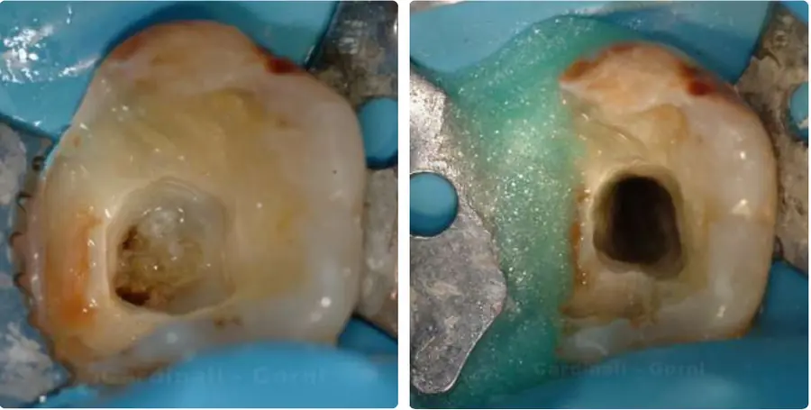
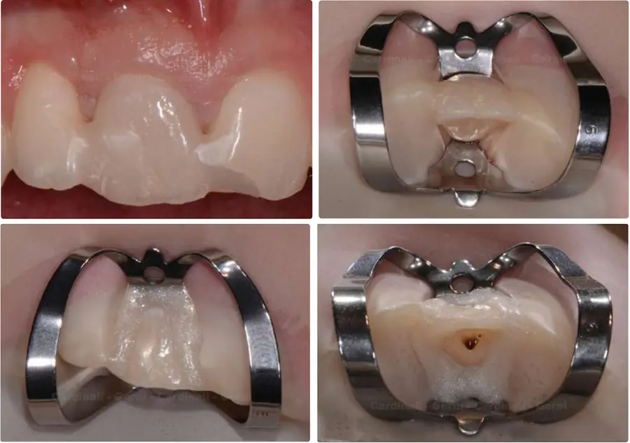

نسخه استخراجشده؛ ترجمه یا تأیید علمی انجام نشده است. وضعیت: captured
درمان ریشهی پرمولر دوم پایینی که دیوارهی دیستالش با پوسیدگی تا نزدیک لثه رفته، با کلمپی پایدار شروع شده است. پس از شستوشوی کانال، بیمار از مزهی بد مایع در دهانش میگوید و کنار دیستال گردن دندان، درز باریکی میان ورق و دندان دیده میشود. کلمپ را عوض میکنی؟

حتی وقتی کلمپ و ورق درست نشستهاند و ورق از تماسها رد شده، گاهی ورق دور گردن دندان کامل نمیچسبد. نشت در دو جهت است: بزاق و خون به میدان، و مایع شستوشو یا ترشح کانال به دهان بیمار. این بیشتر در دندان پایهی پروتز و دندانی که با پوسیدگی یا شکستگی تخریب شده پیش میآید.
اگر کلمپ پایدار است، درز دلیل عوض کردن کلمپ نیست؛ درز را سیل کن. دندان دشوار که ایزوله شد، کار بعدی ساده میشود.
مواد تجاری دیگری هم برای سیل مرز ورق و دندان هستند: مواد خمیری شبیه درزگیر (caulk)، پوتی و رزینهای نوری. همه پس از ایزولاسیون روی لثه، در مرز ورق و دندان، گذاشته میشوند و پس از درمان راحت برداشته میشوند. درزگیر و پوتی روی سطح خیس هم میچسبند؛ پوتی سفتتر است.

نکتهی طلایی: در ترمیم، ورق باید خودش دور گردن دندان کامل بچسبد. در درمان ریشه، وقتی کلمپ پایدار است، نشت را با مواد کمکی مثل لیکوئید دم کنترل میکنی، نه با عوض کردن پشتسرهم کلمپ.